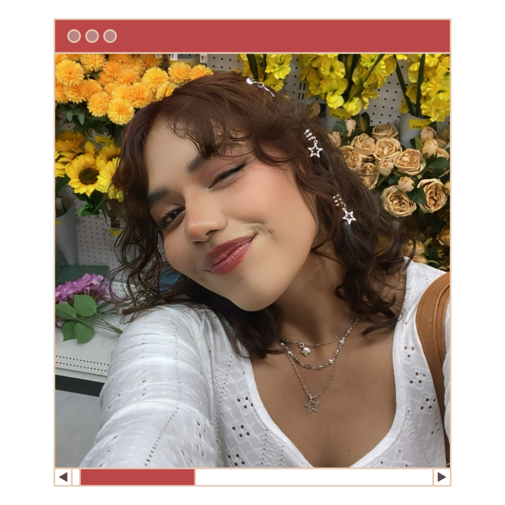

Arantxa Herrera Preza
 Soy una diseñadora gráfica apasionada por la identidad visual, el diseño de carteles y el desarrollo de merchandising personalizado. Mi enfoque creativo combina una visión fresca y moderna con un profundo conocimiento cultural, lo que me permite conectar auténticamente con mis clientes y audiencias.
Actualmente, estoy ampliando mis habilidades hacia el diseño de productos y la dirección creativa, con el objetivo de innovar y aportar valor en cada proyecto. A futuro, busco fusionar el cartelismo, el diseño de merchandising y el diseño industrial para convertirme en directora creativa y liderar proyectos visuales multidisciplinarios.
Sueño con dirigir mi propio estudio creativo, enfocado en el ascenso de marcas y el apoyo a artistas emergentes, en sinergia con Pokpo, mi tienda de fanmerch creada junto con mi mejor amiga, Elisa. Mi trabajo se distingue por la experimentación, la autenticidad y la capacidad de contar historias a través de cada línea y color.